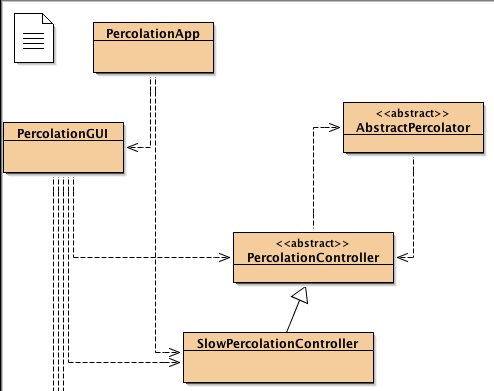

Percolation Lab
Simulating percolation through a
Porous Material
Getting Started
Overview
The Percolation program simulates a substance percolating through a
porous material, such as water or gas percolating through the
ground. The simulation shows percolation through a vertical
two-dimensional slice through the material, represented by a bounded
grid. At the beginning of the simulation, cells within the grid
represent solid material or empty porous openings.
A percolating substance is added to the porous material; as the
simultion runs, the percolating substance spreads to other empty
cells.
Through a graphical user interface, the user can control how the
simulation program is run, stepping through it one step at a time
or running it for many steps until the Stop button is pressed.
In each step, the percolating substance seeps a little further if
it can, moving one cell at a time in one or more directions.
Through the exercises in this project, you will be creating a class to
represent solid material, and creating another class to represent a
simple vertical percolator (a substance that sinks, or percolates
down, but does not seep sideways nor percolate up).
In a follow-up to this lab, you will create a class that can seep
sideways or down, but still obeys gravity and does not percolate up.
Classes
You will be using several classes provided for you, shown in the
diagram below, as well as creating new classes of your own.

PercolationApp represents the application as a whole, and
contains the main method.
(You will make several small modifications to this method in the
course of the lab, although most of your focus will be on creating
new classes.)
- An object of the
PercolationGUI class provides a
graphical user interface, allowing the user to create a simulated
material, specify how porous it should be, add a percolating
substance to it, and run the simulation.
- The code that actually controls the simulation, in reaction to user actions
through the graphical user interface, is found in the
PercolationController class and its
SlowPercolationController subclass.
- The vertical slice of the porous material is represented by a
Grid.
The Grid class comes from the GridPkg library, so
you won't see it in your project or BlueJ class diagram.
- Objects in a grid must be
GridObject objects, so the
classes you create will be subclasses of the GridObject
class.
Throughout this lab you may want to have access to the
class documentation for the Grid, GridObject,
and Location classes. This documentation can be found at
www.cs.kzoo.edu/GridPkg/GridPkgClassDocumentation/.
- For now, ignore the
AbstractPercolator class, which you
will use in a later mini-lab.
- The graphical user interface also uses objects of several other classes
not shown in the diagram above,
including a
PercolationDataFileHandler that allows the
user to read sample configurations for porous materials from files, or
save a configuration to a file.
Exercise 1 — Downloading the program:
- Download the zip file that contains the starting code files for
the Percolation Project
(
PercolationUsingBlueJ.zip
)
and unzip it. You should be able to open the project in BlueJ,
but you will not be able to compile and run it yet, because it is
missing several key classes that you will write.
|
Creating Solid Cells
Exercise 2 — Creating the SolidCell
Class:
-
In BlueJ, create a new class called
SolidCell.
This will represent a cell of solid matter in the porous
material. Every class that represents objects in a grid must
inherit from the GridObject class; in this case,
we will actually inherit from the ColorBlock
class used by GridPlotter (which, in turn, inherits from
GridObject).
java.lang.object
|
+--edu.kzoo.grid.GridObject
|
+--edu.kzoo.grid.ColorBlock
|
+--SolidCell
-
Your new
SolidCell
class does not need any new instance variables, since it will
inherit all the state it needs from ColorBlock
and GridObject.
SolidCell should have two different
constructors: one will take no parameters, and one takes one
parameter, which is a color. Since a ColorBlock
expects to be told the color of the block, the constructor
with no parameters will always create itself as a black block.
-
Finally, your
SolidCell should redefine the
act method from GridObject. The
inherited method does absolutely nothing, but you will write
a new version of the method that prints out a debugging
message if debugging is turned on.
Your code should look like the following code. (Check both this
code and your final class against the bullet points above to
make sure that your class meets the specification.)
import java.awt.Color;
import edu.kzoo.grid.ColorBlock;
import edu.kzoo.util.Debug;
/**
* Percolation Program:
*
* Write a description of class SolidCell here.
*
* @author (your name)
* @version (a version number or a date)
*/
public class SolidCell extends ColorBlock
{
// instance variables
// NO new state -- inherits state from ColorBlock
/** Constructs a solid cell object with the default color
* Color.BLACK.
*/
public SolidCell()
{
super(Color.BLACK); // invoke superclass constructor
}
/** Constructs a solid cell object with the given color.
* @param cellColor the color for this cell
*/
public SolidCell(Color cellColor)
{
super(cellColor); // invoke superclass constructor
}
// redefined method from GridObject
/** Acts for one step in the percolation simulation.
*/
public void act()
{
Debug.println("Solid Cell " + location() + " not acting.");
}
}
- Compile your new class. If it compiles, you should be
able to compile and run the program.
Analysis Questions: (write these up to turn in at the end of
lab)
- Which superclass constructor is being invoked by the two
calls to
super in the SolidCell
constructors?
- Where does the
location
method being called in act come from? Who is the
"Hey, you!" object receiving that method?
(Hint: look at the class documentation for the
ColorBlock
and
GridObject
classes.)
|
Becoming Familiar with the Program and User Interface
In the next exercise you will run the Percolation program and become
familiar with the functionality of its graphical user interface.
Exercise 3 — Becoming familiar with the program:
Compile and run your skeletal percolation program. You
can't run a percolation simulation yet, because you don't have
any percolating substances, but you should be able to create a
representation of a porous material.
Buttons:
- Create a new grid using the appropriate button in the
graphical user interface.
- Using the Manually Populate Grid button, add a few solid
cells to
your grid.
- How many types are available to you in the Type
pull-down menu?
- What happens when you click on an empty cell in the
grid? What happens when you click on a grid location
with a SolidCell in it?
- What happens when you click the Done button?
- What happens if you click on Manually Populate Grid
when the grid already has some items in it?
- Click on the Step Once button, the Step N Times button,
and the Run button. What happens? Why?
- What happens when you click on the Automatically
Populate Grid button? What is the effect of choosing a
density of 0%, 5%, 30%, 75%, or 100%?
- What happens when you click on Manually Populate Grid after
having automatically populated the grid? Why might this be
useful?
File Menu:
- Create a new grid using the File menu, not the New Grid
button. Edit the grid, again using the File menu, and add
some solid cells to your grid. Is the behavior any
different from using the buttons?
- Open the grid file called
porousMaterialA.dat. (It should be in the
same folder as your BlueJ project, along with several
other data files and a folder called images.)
- Edit the grid you opened to place a solid cell that
cuts off one of the pathways from the top of the grid to the
bottom.
- Save your new, edited grid as
porousMaterialA2.dat.
- Test that you saved the file correctly by creating a new
grid (to overwrite the current one) and then opening your
saved file.
- Open the other data files provided to you to see how
they differ.
You do not need to formally write up and turn in the answers to
the questions in this exercise, but if there are any you do not
understand or to which you are unsure of the answers, you should
be sure to follow up with the lab instructor or teaching
assistant.
|
Using Images
You have been representing your solid cells using a solid block of
color, which was possible because you extended the
ColorBlock class. Grid package applications also provide a
relatively easy way to associate a picture with a class, so that every
object of the class in a grid is represented by the same picture.
Exercise 4 — Using images to represent solid cells:
- Edit the
PercolationApp class and find the
commented-out code that associates the
SolidCell class with marb1.gif
(the statement spans across two lines). Uncomment these
lines, then run the program creating solid cells in a grid.
- If you want, you can change the code to use any of the
files in the
images folder in the Percolation
project for your solid cells.
|
Debugging
Often when you write a program, it is useful to keep track of some
information as you go. You can do this by printing that information.
On the other hand, once you know you have your program working you will
not want extraneous messages coming out when you run it. The Grid
Package Debug class provides a handy way to put print
statements in your code that will only print out only when you want them
to, usually during debugging.
Exercise 5 — Debugging:
- Without running your program, write down the program behavior
you expect to see if you create a grid with some solid cells
in it and then click on the Step Once button.
This button should result in the
act method being
called for every object in the grid. The act
method in GridObject does not do anything, but
you overrode that behavior by writing your own
act method in SolidCell.
- Run your program, creating (or reading in) a grid with
solid cells in it. Click on the Step Once button.
Write down the actual behavior you see for the Analysis part
of the Exercise.
- Edit the
PercolationApp class and find the
commented-out code that turns debugging on. Uncomment it
and run your program. Do you see different behavior?
- Before running the program again, click in the BlueJ
terminal window and then choose
Clear from the
Options menu.
Analysis: (write this up to turn in at the end of
lab)
- Document the expected and actual behavior of your program
before you turned debugging on.
If the expected and
actual behavior are different, provide an explanation.
|
Vertical Percolation
Now it's time to create a class to represent a substance that will
percolate through your porous material. We will start by simulating
"vertical percolation," where the percolating substance percolates straight
down but does not seep sideways nor up. This type of percolation might
describe the behavior of a small solid, such as grains of sand,
percolating through a material, although it would not provide a good
simulation of a liquid or gas.
Exercise 6 — Creating a skeletal vertical
percolation class:
-
Create a new class called
VerticalPercolator.
Eventually this will represent a substance that percolates
down through your porous material, although to start with we
will create a class that doesn't do anything yet. That means
that to begin with it will be very similar to the
SolidCell class.
(You may want to copy and paste some code segments from
SolidCell into VerticalPercolator as
you go.)
This class, though,
should inherit directly from the GridObject class
(not from the ColorBlock class).
java.lang.object
|
+--edu.kzoo.grid.GridObject
|
+--VerticalPercolator
- Run your program, creating (or reading in) a grid with
solid cells in it.
Can you create vertical percolation objects in the grid?
(Are there any other types in the pull-down menu to the left
of the editing grid?)
- In the
PercolationApp class, uncomment the
line that would add "VerticalPercolator" to the array of
editableTypes.
(Notice that one difference between arrays and ArrayLists is that
arrays provide this short-hand method that you see for adding
elements to the array.)
- Run your program, creating (or reading in) a grid with
solid cells and adding vertical percolation objects to it.
What do vertical percolation objects look like?
- In the
PercolationApp class, uncomment the
two lines that will associate the
VerticalPercolation class with an image. (You
can switch to a different image if you like.)
- Run your program again, creating (or reading in) a grid
with solid cells and vertical percolation objects in it.
Click on the Step Once button. Do you see different
behavior (or at least different debugging output) for solid
cells and vertical percolators?
Is the behavior what you expected to see?
- Between each run of your program, don't forget to
click in the BlueJ
terminal window and then choose
Clear from the
Options menu.
- Save a grid with some solid cells and some
vertical percolation objects in it to a file. Read in the
file. What was saved to the file?
Is the behavior what you expected to see?
|
Exercise 7 — Next steps
toward percolation:
|
Exercise 8 — Fully implemented
vertical percolation:
-
Update the
getPercolationLocation method to
return the correct location. First determine the row and
column of the substance's current location, and then use those
values to return a new location that represents the location
below the current location. Run your program and make sure
that your debugging messages show that you've calculated the
right location.
-
Update the
percolateTo method. The first thing
it needs to do is to see whether the location passed to it as
a parameter is a valid location (inside the grid, not outside)
and is empty. Read the class documentation for the
Grid
class to find out what methods would be useful for this.
Pay particular attention to the method details, including
the description of the return values. You will find that
one of the two obvious method choices can be used to check
for both validity and emptyness. If the location you are
trying to percolate to is invalid or not empty, just return
without doing anything. If it is OK, then percolate there by
adding a new VerticalPercolator object to the
grid in the new location. The last thing you need to do is to
tell the current controller about the new object you created.
You can do this with code like the following (assuming that
dupl is a variable representing the new object):
PercolationController.getController().notePercolationTo(dupl);
Thus, the skeleton
for this method, with comments, debugging messages,
and the statement to notify the controller of the new object,
might look like:
Debug.println("Should now percolate to location " + newLoc);
// If newLoc is not in the grid or is not empty, do nothing.
// If newLoc is a valid, empty location, spread to that location.
Debug.println("Should percolate to location " + newLoc +
" successfully.");
// Tell the controller about the new percolating substance object.
PercolationController.getController().notePercolationTo(dupl);
- Before you run your program, think clearly about what you
expect the results to be. Then run the program and compare
your actual results to your expected results. Edit your
program as necessary so that your program does what you expect
it to. Test your program with a variety of different grids,
strategically
placing your solid cells and starting vertical percolation
substances to fully test your program.
|
Exercise 9 — Save and Print Your Modifications
-
Update the class documentation for
SolidCell and
VerticalPercolator to accurately describe the
purpose and behavior of the class from a user's perspective.
Focus on what the program does, rather then how it does it.
Include your name and the current date as well as the names of
anyone from whom you received help. Update the documentation
before each method, including @return and @parameter
descriptions.
- When you are done and your program works correctly, print
out the source code for the
SolidCell and
VerticalPercolator to turn in.
- Also turn in your answers to the Analysis Questions in
this lab.
- This lab must be finished before the next class
period.
|